SARIMA Model
Back to ModelsSARIMA is a classical seasonal time-series model. It captures daily/weekly patterns well, and provides a strong interpretable baseline for short-term load forecasting.
Outputs
- Metrics (JSON): assets/data/sarima/sarima_metrics.json
- Forecasts (CSV): assets/data/sarima/sarima_forecasts.csv
- Notebook (GitHub): Open sarima_model.ipynb
Figures
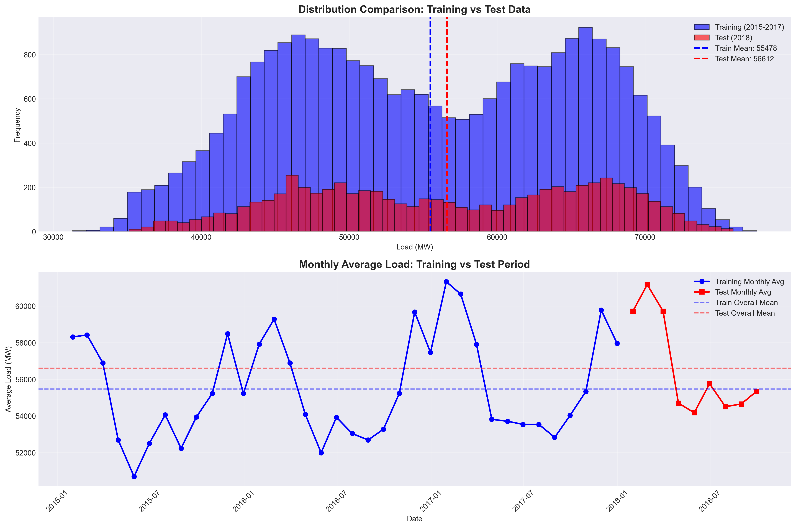
00 – Data shift analysis
Train vs test distribution and drift checks.
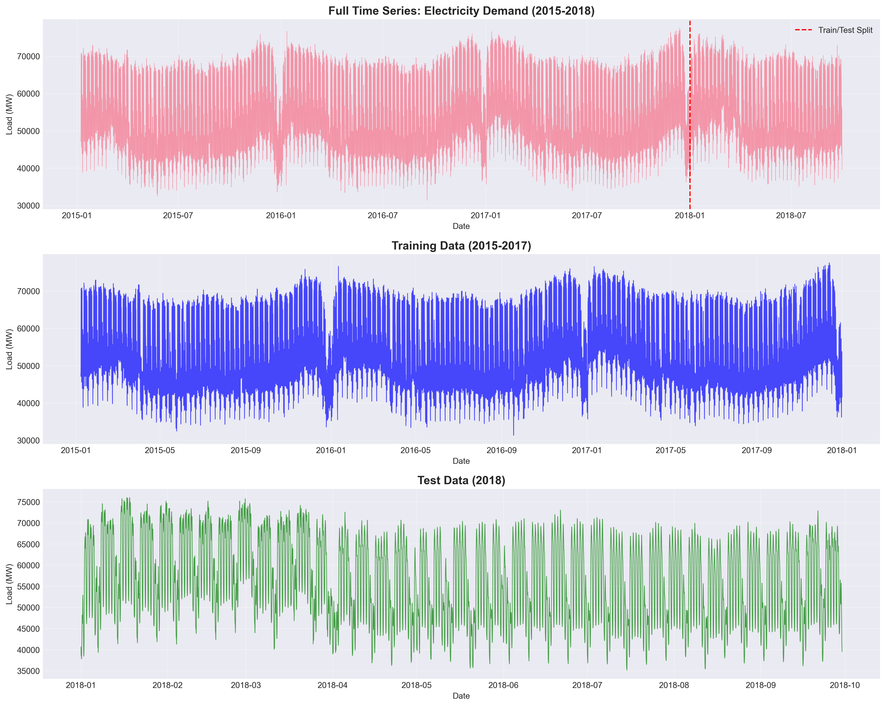
01 – Time series overview
Full series with train/test split.
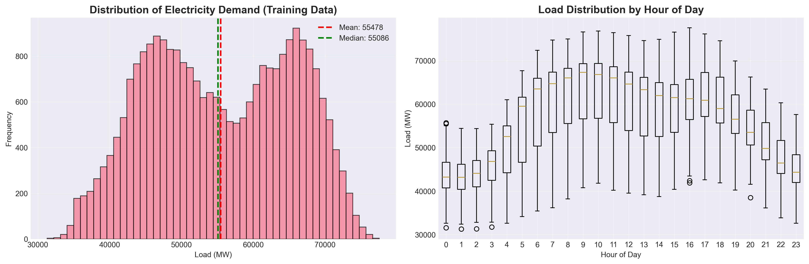
03 – Distribution analysis
Load distribution and descriptive statistics.
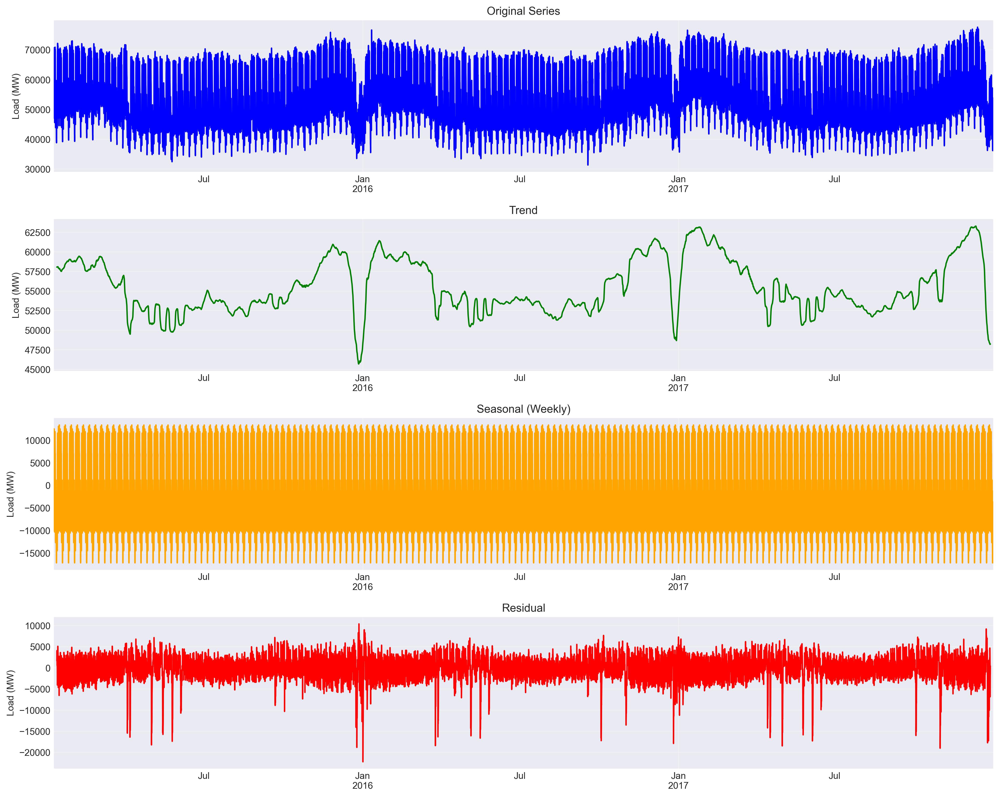
04 – Seasonal decomposition
Trend/seasonal/residual components.
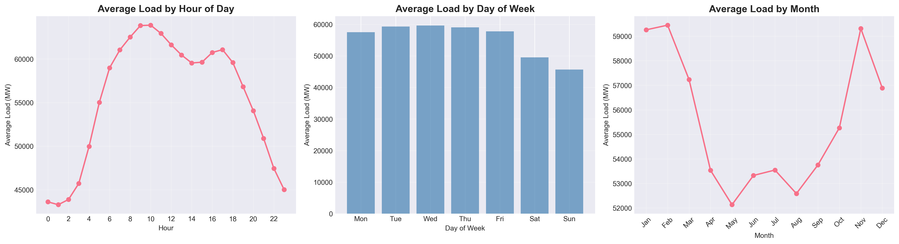
05 – Seasonal patterns
Daily and weekly seasonality behaviour.
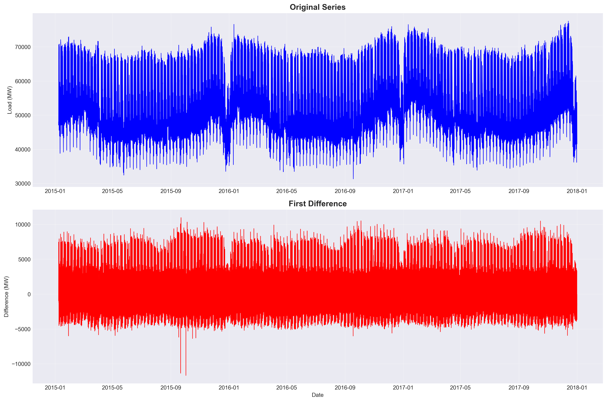
06 – Differencing
Stationarity preparation via differencing.
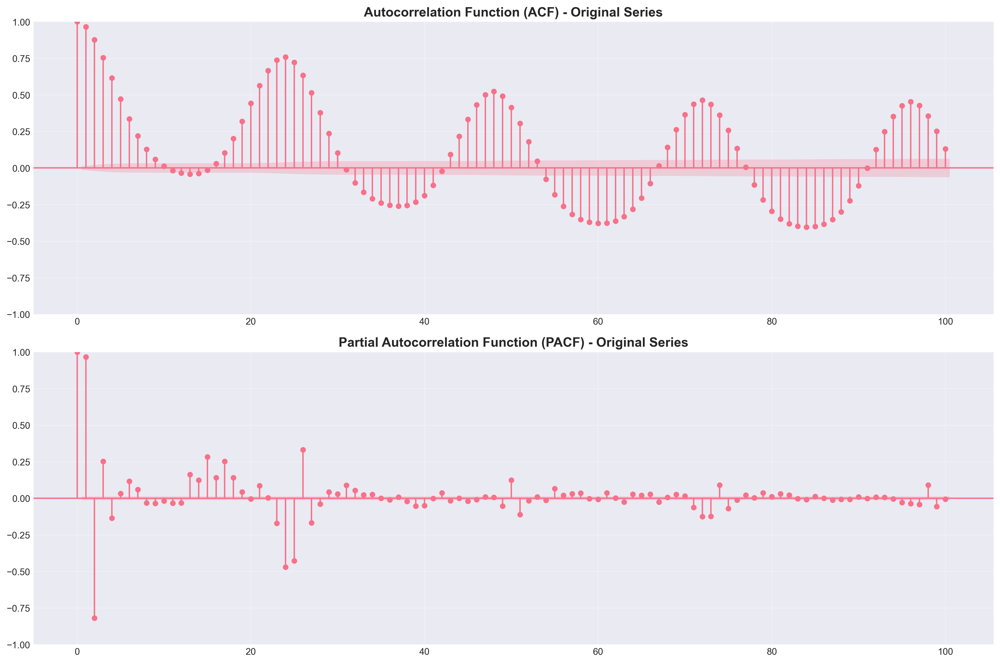
07 – ACF / PACF
Autocorrelation diagnostics for SARIMA orders.
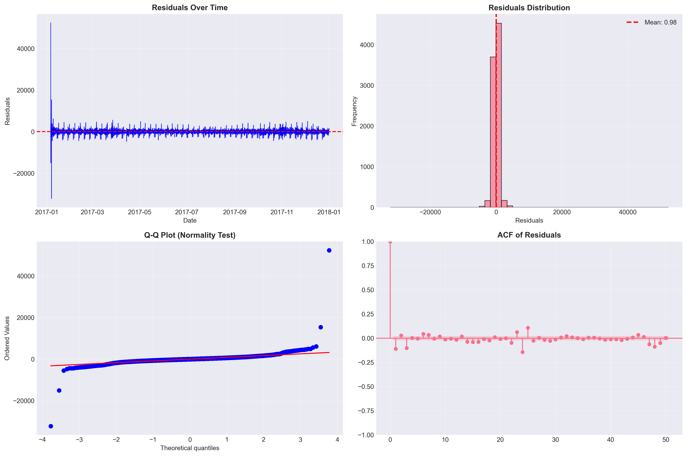
09 – Residual analysis
Residual checks (normality/autocorrelation).
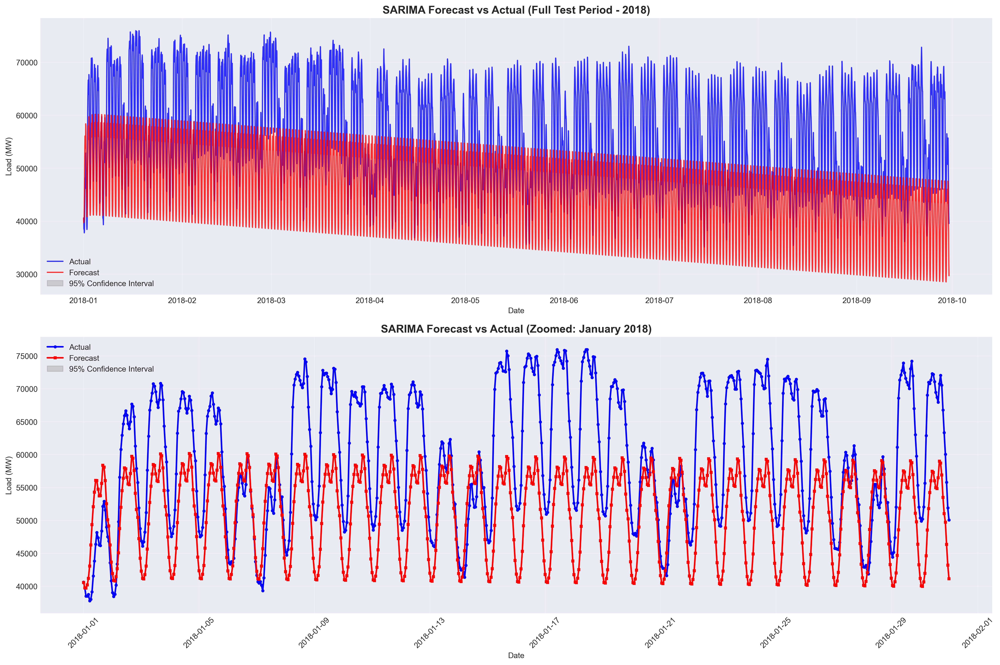
10 – Forecasts
Forecast vs actual (full and zoomed views).
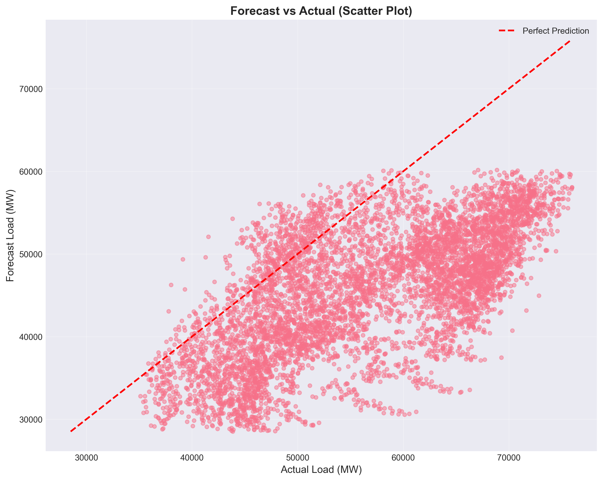
11 – Forecast scatter
Actual vs predicted scatter view.
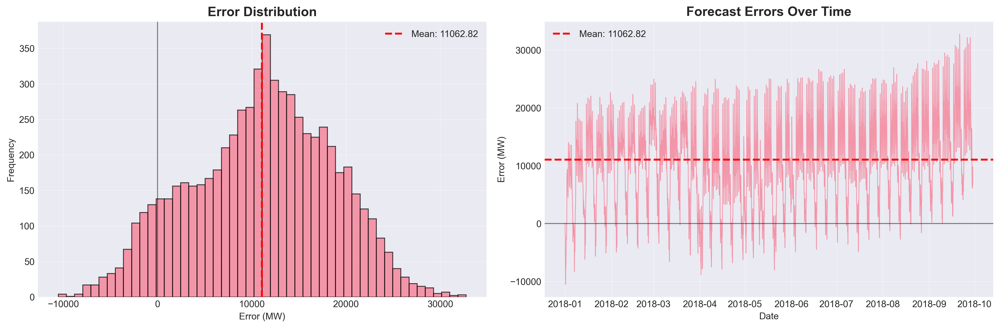
12 – Error analysis
Error distribution and peak-specific errors.